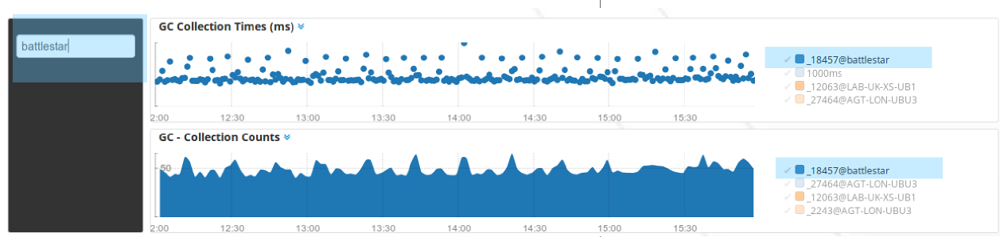

This guide gives a few tips in getting the most out of your Workspaces using tips and tricks from existing Logscape Apps. Each Workspace is a maximum of 16 x 16 tiles. The tile sizing is dynamic.

On a typical display a Workspace can be 6x10 tiles without any scrolling required. Anything larger and you run the risk of the Workspace being too large for smaller displays.
You may have noticed from the standard Logscape Apps that each Workspace has a navigation panel and a filter. The navigation panel provides links to all the other Workspaces in the App. The Navigation panel should be 4 tiles high. Here's a snippet for the html code to build the navigation panel taken from one of the apps.
<table class="table" style="background-color:#333"> <tbody> <tr> <td> <i class="fa fa-home fa-fw"> <a class="white" href="Workspace=Home"> Logscape Home </td> <tr> <td> <a class="white" href="Workspace=Unix - Home">Home </a> <tr> <td> <a class="white" href="Workspace=Unix - System Metrics"> Overview </a> </tbody> </table>
The colours used for the panel and filter is a slate gray
#CCCCCC
The filter will give users an ability to filter noisy Workspaces. 
Pie charts are useful for showing relative quantities. There are few things to be aware of when you have a large number of series. If you have more than 10 series in your pie chart use the top(N) function to make sure that the legend does not flow out of the tile.
| _type.equals(oskpis) cpu.max(_hostname,) top(5)
The image below shows a typical pie chart with a manageable number of series. The pie chart has the legend enabled. Both fit comfortably in the tile.
Having long series names or too many has the following consequence. The legend takes up most of the space in the tile making the visualisation almost illegible.
If your data is uses a set number of series of 5 or less, you may choose to disable the legend and rely solely on the chart labels. Disabling the chart legend will also give you more screen real estate for your visualisation.
It is common in Logscape Apps to combine an aggregate chart type like pie chart or table and a time series view of the same data on the same row. This provides trend view of the data, showing outliers and behaviour. The aggregate view will show the general behaviour of the entire data set. Here's an example from the unix app.
The average cpu load is shown in the pie chart. The trend view is shown with a spike around 1430 on host lscape2.